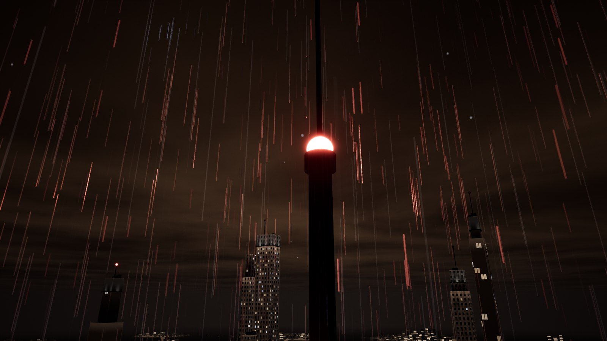
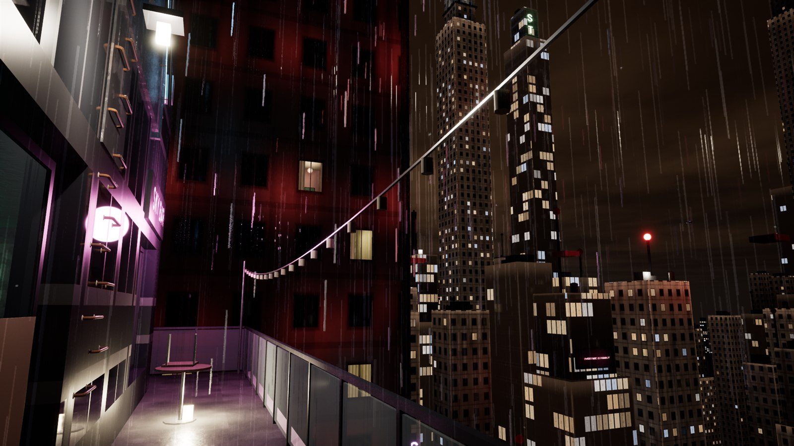
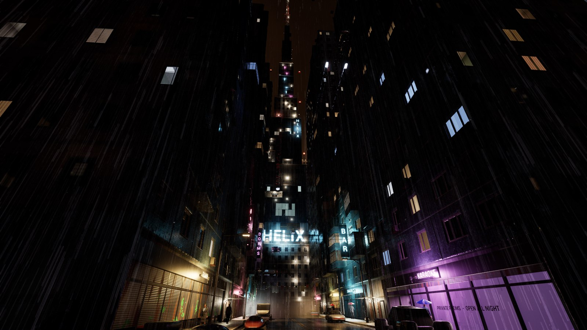

The red lights on the towers keep the flying traffic off them. When one goes dark the sky around it closes, and nothing can fly you up. So you go the only way left: up the outside, by the ladders, pipes, ledges and old sign brackets the building happens to have, one hand at a time, clipping your rope in where you can and resting at the lamps when your arms give out. The city has robots that could do it. You're cheaper, and you don't ask questions. Then one night the jobs stop making sense.
240 m

200 m
shots/roof.jpgThe roof in the cloud: red obstruction lights as halos, the lattice of the mast going up into nothing
114 m

40 m
shots/hands.jpgHands on a wet downpipe's clamps, looking down past the podium to the lit street
0 m

Demo 1
A short day job on a scaffold to learn the ropes, then one tower, at night, in a storm. It's with friends for now: ask me for the build.
Dev log
What I've built, day by day, with pictures: the Spire dev log.